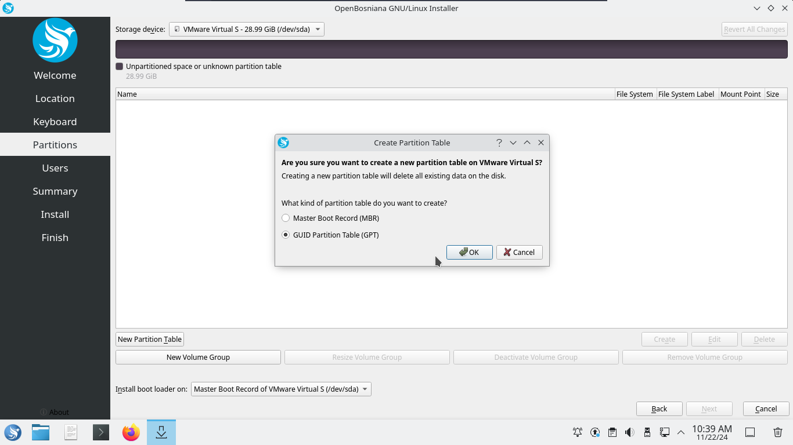

Install OpenBosniana OS
The Live Session
When you boot the computer from the USB stick (or DVD), OpenBosniana OS starts a live session. It logs you in automatically as a user called user and shows you a desktop with the installer on it:

The live session is similar to a normal session (i.e., OpenBosniana OS once it is permanently installed on the computer), but with the following exceptions:
- The live session is slower since it runs from a USB stick or DVD rather than an SSD or HDD.
- Changes you make in the live session are not permanent. They are not written to the USB stick (or DVD) and do not impact the system installed later.
- Some applications may behave differently in the live session.
Hint The username for the live session is
user. The default password for both the live user and root isopenbosniana.
Installing OpenBosniana OS on Your Computer
1. Start the Installer
Double-click Install OpenBosniana OS on the desktop.
2. Select Your Language
Choose the language for the installation.

3. Select Your Location
The next screen displays a map where you can choose your location. This will set your time zone and download server.
- Use the Region drop-down menu to select your region.
- Use the Zone field to choose a major city in the same time zone.
- Customize the system language and regional formats by using the Change buttons.

4. Select Keyboard Layout
Choose your keyboard layout and verify it by typing in the provided text box.

5. Set Up Partitions
Decide how to allocate disk space:
- Erase Disk: Formats the entire disk (all data will be deleted).
- Install Alongside Another OS: Automatically resizes the existing OS and installs OpenBosniana OS beside it.
- Something Else: Manually manage partitions.
Note OpenBosniana OS requires a partition mounted on the root
/directory. It's recommended to create aswappartition for hibernation and additional memory support.

6. Configure User Settings
Set up your user account:
- Enter your name, username, computer name, and password.
- Verify the details with a green checkmark before proceeding.

7. Review and Confirm
Review the summary of your installation settings. If everything is correct, press Install. A confirmation dialog will appear to begin the installation process.

8. Installation Progress
The installer shows progress with a bar and percentage. Additional details can be viewed by clicking the Magnifying Glass button. A slideshow will play during installation.

Rebooting Into the Installed System
Once installation is complete:
- Choose to reboot by selecting the Reboot now checkbox.
- Remove the installation media when prompted.
- Press Done to restart your computer into the newly installed OpenBosniana OS.
If you want to continue using the live session, uncheck Reboot now and press Done to close the installer.